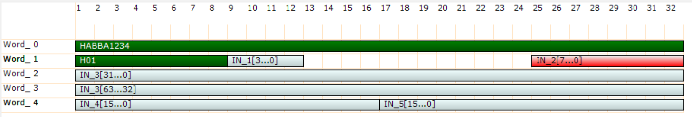
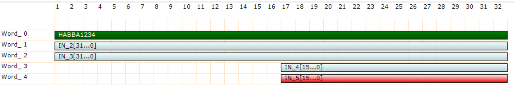
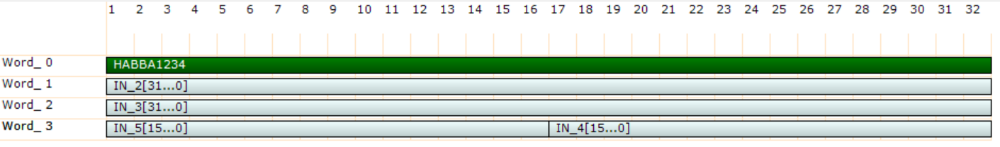

|
SciSDK Library
SDK for Sci-Compiler projects
|
|
SciSDK Library
SDK for Sci-Compiler projects
|
The custom packet allows to transfer data from FPGA to the PC in list mode. This element support both burst and DMA access
The custom packet is particular version of the list where the user can define the data packet format.

In respect to the list the custom packet has a structured data type and can be decoded by the custom packet decoder.
In order to decode the custom packet it is raccomanded that the first dword (32 bit) of the custom packet is a fixed constant. This is the align world, which is exported by Sci-Compiler and can be used to align the custom packet. Aldo is not mandatory to have an align world, this world reduce the propability that in case of lost data, all data in the packet got lost.
The JSON that Sci-Compiler generates for the custom packet contains the description for every words. Most of programming language do not allows to define data type at runtime indeed it is necessary that the user define the struct in the source code and cast the data pointer to it. When custom packet is used in raw mode, it can be consider a list In the end, the custom packet is no more than a list with a wrapper to format the FPGA data word
The list inside the custom packet is a FIFO buffer. The buffer is allocated in the FPGA and the data are transferred to the PC. On some board it is possible to enable DMA to speed up transfer. On the PC side a buffer can be allocated using the SCISDK_AllocateBuffer function. The buffer is freed using the SCISDK_FreeBuffer function.
Decoded Mode Because the List is a FIFO is not possible to know a priori the number of bytes that will be transferred. The SCISDK_AllocateBuffer take indeed an extra parameter to specify the size of the buffer (in packets) on the PC side; the SCISDK_ReadData function will try to read the maximum number of bytes that can fit in the buffer.
It is important to note that the buffer size is specified in packets and not in bytes. The FPGA packet size is specified in Sci-Compiler (i the example in the figure above the packet size is 5 DWORD, that means 5*32bit = 160bit or 20 bytes). This is always a multiple of 32 bits (DWORD). All transfer will always be done with a size multiple of the FPGA packet size. This ensure that is not possible to read partial packet that will corrupt data in an urecoverable way
Raw Mode In raw mode the costom packet do not process packet and ignore the information on packet size and structure present in the JSON. It assume that the packet size is 1 DWORD and the last argument of SCISDK_AllocateBuffer specify the size in DWORD of the user buffer. SCISDK_ReadData will try to fill this buffer that is no more alligned to packet size.
The readout can be configure to work in two different mode:
SCISDK_ReadData function will block until the buffer is full or the timeout is reached.SCISDK_ReadData function will return immediately with the number of bytes read.More over the list can be configured to work:
SCISDK_ReadData function will read the data from the hardware FIFO when the user call the function.SCISDK_ReadData function will read the data from the thread buffer. Thread mode increase the perfomance of the list because, while the use elaborate the previous data, the list accumulate next data in the thread buffer.The following parameters can be configured:
| Parameter | Acces Mode | Description | Default value |
|---|---|---|---|
| acq_len | R/W | maximum number of sample to be transferred per physical FIFO access | 1024 |
| acq_mode | R/W | select blocking/non-blocking mode | blocking |
| timeout | R/W | set the timout in ms in blocking mode | 100 |
| thread | R/W | enable the internal thread: true/false | false |
| high_performance | R/W | if true the internal FIFO access lock the bus in priority mode. | false |
| threaded_buffer_size | R/W | size in dword of the internal buffer | 100000 |
| check_align_word | R/W | if true, check the packet alignment | false |
| data_processing | R/W | set data processing mode: raw, decode | decode |
| dma_buffer_size | R/W | set the size of the client side (DLL) dma buffer. MAX 16 Mbyte | 1000000 |
| buffer_type | R | get buffer type: SCISDK_OSCILLOSCOPE_RAW_BUFFER or SCISDK_OSCILLOSCOPE_DECODED_BUFFER |
The acq_len parameter is the maximum number of sample to be transferred per physical FIFO access. This parameter has an impact on the transfer speed. As bigger is the value, as faster is the transfer. Bigger value will lock the bus for a longer time and can cause a loss of data if the readout channel is shared between multiple readout block (for example multiple list or custom packet). The raccomanded value is the 90% size of the size of the internal FIFO. This parameter is expressed in packets.
In blocking mode the SCISDK_ReadData function will block until the buffer is full or the timeout is reached. In non-blocking mode the SCISDK_ReadData function will return immediately with the number of bytes read. The maximum number of bytes that can be read is the size of the buffer allocated with the function SCISDK_AllocateBuffer. In blocking mode the timeout is set with the timeout parameter. The timeout is expressed in ms. In non-blocking mode the timeout is not used. In both mode, if the buffer is fill with even just a single word the function will return NI_OK. If there is no data at all the read function will return NI_NO_DATA_AVAILABLE.
In threaded mode the list will start a thread that will read the data from the hardware FIFO and store it in an internal buffer (thread buffer). The SCISDK_ReadData function will read the data from the thread buffer. While in polling mode, if the user do not call the SCISDK_ReadData function, the FIFO in the FPGA can be full and the data will be lost. In threaded mode the data are stored in the thread buffer automatically. The internall thread will poll the FPGA to check if data is available and will store it in the thread buffer. Thread mode increase the perfomance of the list because, but consume continuously the communication bandiwdth between the FPGA and the PC. The user lost the control on how much time the specific list will access to the shared bus.
We discurage to enable this parameter. If enabled, the highe performace mode force the internal physical ReadFIFO function to ignore the word available field of the FIFO. When this parameter is disable, the ReadFIFO function check the word available field of the FIFO and will make a read only if this number if not 0. More over the read size will be the minimum between word available and acq_len parameter. In this way the ReadFIFO function will not lock the bus for a long time. In high perforamnce mode, the ReadFIFO will always setup a read cycle with size equal to acq_len parameter. This will lock the bus for a long time untill all data are received. This will increase significantly the transfer speed but no other access, even to read/write register can be done until all data are received or the timeout is reached. Use this mode only if you are sure that the bus is not shared with other readout block and you don't need
The check_align_word parameter can be used to check the packet alignment. If enabled, the SCISDK_ReadData function will check if the data are alligned to the packet. The alignament algorithm is the following:
In order to set to true the check_align_word parameter, the first word in the packet definition must be a constant. If the first word is a variable, the check_align_word parameter will be set to false and any attempt to set it to true will return NI_PARAMETER_CAN_NOT_BE_SET_WITH_THIS_CONFIG.
The data_processing parameter can be used to set the data processing mode. The data processing mode can be set to raw or decode. In raw mode the data are not processed and the user will receive the raw data from the FPGA. In decode mode the data are processed and the user will receive the data as they are pushed in the FPGA fifo, loosing the concept of packet. The custom packet behavior is the same of the list In decode mode the data are analized, divided in packet and it is possible to check the alignment to an aligment word.
The X5560 family allows to instantiate up to 1 DMA accelerated custom packet. In order to use DMA, the Custom Packet DMA Sci-Compiler IP MUST be used. Is not possible to use DMA with the standard Custom Packet IP. If a custom packet is allocated as a DMA custom packet in Sci-Compiler, SciSDK can only read the endpoint using DMA. The DMA allocate in the device 16 MWORD (word = 32 bit) FIFO in the DDR3 of the device; this allows to sustain a much higher event rate in respect of the standard custom packet. The DMA buffer is allocated in the device and the data are transferred to the PC using ZMQ socket. On the PC side a user copy buffer can be allocated using the SCISDK_AllocateBuffer function. The minimum size of the buffer is 2048 word (8192 bytes). If user specify a buffer size smaller than 2048 word, the function will still allocate 2048 word and return a bigger buffer
DMA Usage example is provided in the example folder of the source code of the library.
The following commands are available:
| Command | Description | Parameter |
|---|---|---|
| start | Clear the FIFO and start the acqusition | |
| stop | Stop the acquisition |
Start will clear the list content, create the internal thread and allocate the thread buffer if thread mode is enable and start the acquisition. All list parameter can not be changed while the acquisition is in progress. Stop the list before change any parameter or the property set will be rejected.
The buffer is allocated using the SCISDK_AllocateBuffer function. The buffer is freed using the SCISDK_FreeBuffer function. Because the List inside the Custom Packet is a FIFO is not possible to know a priori the number of bytes that will be transferred. The SCISDK_AllocateBuffer take indeed an extra parameter to specify the size of the buffer (in packet) on the PC side; the SCISDK_ReadData function will try to read the maximum number of bytes that can fit in the buffer.
This is an example on how allocate a Custom Packet Buffer:
The buffer allocated with the SCISDK_AllocateBuffer function has a last size parameters containing the number of packet the user want to allocate in the buffer. For example if the user create in Sci-Compiler a custom packet with 5 rows (32 bit per row) and want to allocate a buffer with 1000 packets, the function will allocate a buffer with 16000 bytes. The SCISDK_ReadData function will try to fill the buffer with 16000 bytes (1000 words * 16 bytes) each time is called. It is crtical to ensure that the transfer will always be aligned to the word size to avoid to read partial words with irrecoverable data loss.
This example allocate a buffer with 1000 packet:
It is also possible to allocate RAW buffer, in that case the size of packet is fixed to 1 row (1DWORD), the buffer size fo 1000 packets will be 4000 bytes, indipendently from the number of rows in the custom packet.
The data output structure is the following:
magic : magic number to identify the buffer type. It is set to SCISDK_CP_RAW_BUFFER_MAGIC data : it's the array of the raw data. The data is stored as a uint32_t array. No further details on data decode is provided for raw mode. Raw mode is provided for post processing porpouse of the data. is just usefull to read data in a buffer and store it in a file. The decode should be done in post processing.
The data output structure is the following:
magic : magic number to identify the buffer type. It is set to SCISDK_CP_DECODED_BUFFER_MAGIC data : it's the array of the decoded data. The data is stored as a SCISDK_CP_PACKET array. buffer_size : the number of packet that can fit in the buffer packet_size : the number of row in the packet valid_data : the number of valid packet in the buffer
The SCISDK_CP_PACKET rappresent the single data packet. It is composed by an array of row and the number of row in the packet. row : it's the array of the decoded data. The data is stored as a uint32_t array. n : it's the number of row in the packet. In the actual implementation the number of row in the packet is always the same for all the packet in the buffer and is equal to packet_size.
If the inputs of the custom packet are all aligned to 32bit the decode of the data is very simple. Just read the data in the struct, from first to last row and this is mapped 1:1 to the input of the custom packet.

If multiple input of the custom packet are packed in a single word, the decode of the data is more complex. The user may use shift and mast operation to access to the data

The is also the possibility, in some programming language to cast the packet buffer to a struct. Consider the first example, a PSD (pulse shape discrimination) that produce for each event a packet with channel identificatiom, timestamp, two charge measure (Qshort/Qlong) and four flags.:
We can immagine a packet struct like this:
ROW 0:
This example show how to cast the data to a pack struct:
Simple example with raw data
Expected output will be something like this:
Simple example with decoded data
Expected output will be something like this:
You can find the labview file for this example here
You can find the labview file for this example here
A multichannel system is used to detect neutron and gamma. Neutron has a longer dacay time and gamma has a shorter decay time. The system will use a charge integrator with two time windows to calculate Qshoe and Qlong.
ROW 0:
In this example we will dump the raw data in a binary file and then we will open it in python and decode it. We assume that the data packet is the following:
Now we can open the file in python and decode it: